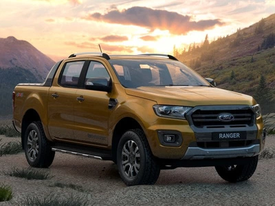

History
In the early days of automobile manufacturing, vehicles were sold as a chassis only, and third parties added bodies on top. In 1902, the Rapid Motor Vehicle Company was founded by Max Grabowsky and Morris Grabowsky who built one-ton carrying capacity trucks in Pontiac, Michigan. In 1913, the Galion Allsteel Body Company, an early developer of the pickup and dump truck, built and installed hauling boxes on slightly modified Ford Model T chassis, and from 1917 on the Model TT. Seeking part of this market share, Dodge introduced a 3/4-ton pickup with cab and body constructed entirely of wood in 1924. In 1925, Ford followed up with a Model T-based, steel-bodied, half-ton with an adjustable tailgate and heavy-duty rear springs. Billed as the "Ford Model T Runabout with Pickup Body", it sold for US$281; 34,000 were built. In 1928, it was replaced by the Model A which had a closed-cab, safety-glass windshield, roll-up side windows and three-speed transmission.
In 1931, GM introduced light duty pickups for both GMC and Chevrolet targeted at private ownership which were based on the Chevrolet Master then in 1940 introduced the dedicated light truck platform separate from passenger car called the AK series . Ford North America continued to offer a pickup bodystyle on the Ford Model 51, and the Ford Australian division produced the first Australian "ute" in 1932. In 1940 Ford offered a dedicated light duty truck platform called the Ford F100 then upgraded after the war to the Ford F-Series in 1948. Dodge assumed truck production from Graham-Paige while the company did produce their own truck during World War 1 called the Dodge T-, V-, W-Series. International Harvester offered the International K and KB series which were marketed towards construction and farming and didn't have a strong retail consumer presence, and Studebaker also manufactured the M-series truck. At the beginning of the Second World War, the United States government halted the production of privately owned pickup trucks, and all American manufacturers built heavy duty trucks for the war effort.
In the 1950s, consumers began purchasing pickups for lifestyle rather than utilitarian reasons. Car-like, smooth-sided, fenderless trucks were introduced, such as the Chevrolet Fleetside, the Chevrolet El Camino, the Dodge Sweptline, and in 1957, Ford's purpose-built Styleside. Pickups began to feature comfort items such as power options and air conditioning. During this time pickups with four-doors, known as a crew cab, started to become popular. Released in 1954 in Japan with the Toyota Stout, in 1957 in Japan with the Datsun 220 and in 1957 in America with the International Travelette. Other manufactures soon followed. The Hino Briska in 1962, Dodge in 1963, Ford in 1965, and General Motors in 1973.
In 1963, the U.S. chicken tax directly curtailed the import of the Volkswagen Type 2, distorting the market in favor of American manufacturers. The tariff directly affected any country seeking to bring light trucks into the U.S. and effectively "squeezed smaller Asian truck companies out of the American pickup market." Over the intervening years, Detroit lobbied to protect the light-truck tariff, thereby reducing pressure on Detroit to introduce vehicles that polluted less and that offered increased fuel economy.
The US government's 1973 Corporate Average Fuel Economy (CAFE) policy sets higher fuel-economy requirements for cars than pickups. CAFE led to the replacement of the station wagon by the minivan, the latter being in the truck category, which allowed it compliance with less-strict emissions standards. Eventually, this same idea led to the promotion of sport utility vehicles (SUVs). Pickups, unhindered by the emissions controls regulations on cars, began to replace muscle cars as the performance vehicle of choice. The Dodge Warlock appeared in Dodge's "adult toys" line, along with the Macho Power Wagon and Street Van. The 1978 gas guzzler tax, which taxed fuel-inefficient cars while exempting pickup trucks, further distorted the market in favor of pickups. Furthermore, until 1999, light trucks were not required to meet the same safety standards as cars and 20 years later most still lagged behind cars in the adoption of safety features.
In the 1980s, the compact Mazda B-series, Isuzu Faster, and Mitsubishi Forte appeared. Subsequently, American manufacturers built their own compact pickups for the domestic market: the Ford Ranger, and the Chevrolet S-10. Minivans make inroads into the pickups' market share. In the 1990s, pickups' market share was further eroded by the popularity of SUVs.
From the fuel selection, it can be divided into diesel version and gasoline version :
- The advantages of the diesel version are larger torque, strong load-climbing ability, cheap to buy, and low fuel consumption; the disadvantage is that it is noisy and slow.
- The gasoline version has the advantages of fast speed and low noise; the disadvantage is that the car is more expensive, fuel consumption is large, and torque is small.
5อันดับรถขายดี

Nissan Navara
Nissan
New Price
599,000 บาท

Ford Ranger Double Cab
Ford
New Price
789,000 บาท

Mitsubishi Triton
Mitsubishi
New Price
535,000 บาท
Chevrolet Colorado Crew Cab
Chevrolet
New Price
665,000 บาท

Mazda BT-50 Freestyle Cab
Mazda
New Price
679,000 บาท